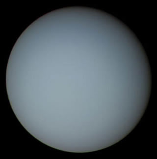

|
O Sistema Solar é constituído por oito planetas principais, são eles: Mercurio, Venus, Terra, Marte, Júpiter, Saturno, Urano e Netuno.
Urano é o sétimo planeta a partir do Sol, o terceiro maior e o quarto mais massivo dos oito planetas do Sistema Solar. Foi nomeado em homenagem ao deus grego do céu, Urano, o pai de Cronos e o avô de Zeus. |
| Urano | |||||||||||
|---|---|---|---|---|---|---|---|---|---|---|---|
|  |
|
Fonte wikipedia